Chapter 5. Unsupervised Learning
Contents
Chapter 5. Unsupervised Learning#
Contents#
Clustering (Bishop, Chater 9):
\(k\)-means clustering
mixtures of Gaussians
self-organizing maps (SOM)
Subspace mapping (Biship, Chapter 12):
principal component analysis (PCA)
singular value decomposition (SVD)
independent component analysis (ICA)
Neural Mechanisms
Receptive field formation
As we grow, we learn that there are different things and creatures in the world, such as plants and animals, and in more detail, dogs, cats and humans. What is remarkable is that most of such learning is done spontaneously without explicit teaching about what is a dog, or labels specifying which is a dog or which is cat. Learning categories without explicit labels is an example of unspervised learning. But how can we define categories without category labels?
The key in unsupervised learning is to find a certain structure in the distribution \(p(\b{x})\) that produced the observed data \(\{\b{x}_1,...,\b{x}_N\}\).
Typical cases are:
Dividing into clusters:
\(k\)-means clustering
mixtures of Gaussians
self-organizing maps (SOM)
Decomposing into components:
principal component analysis (PCA)
singular value decomposition (SVD)
independent component analysis (ICA)
K-means Clustering#
The most basic method of clustering is \(K\)-means clustering, which divides a data set \(\{\b{x}_1,…,\b{x}_N\}\) into \(K\) clusters.
We define prototypes \(\b{\mu}_k\) for \(k=1,...,K\) clusters and specify belonging of data points by binary indicator variables \(r_{nk}\in\{0,1\}\).
A good clustering is achieved by minimizing the distortion measure $\( J = \sum_{n=1}^N \sum_{k=1}^K r_{nk}||\b{x}_n-\b{\mu}_k||^2. \)$
We do that by repeating the following steps:
For the current prototypes \(\b{\mu}_k\), re-assign data points.
for each \(\b{x}_n\), find the nearest \(\b{\mu}_k\) and set \(r_{nk} = 1\) and \(r_{n j\ne k} = 0\) .
For the current assignment by \(r_{nk}\), update the prototypes by $\( \b{\mu}_k = \frac{\sum_{n=1}^N r_{nk}\b{x}_n}{\sum_{n=1}^N r_{nk}}\)$
import numpy as np
import matplotlib.pyplot as plt
%matplotlib inline
# Load data from a text file
X = np.loadtxt('data/faithful.txt')
N, D = X.shape
plt.scatter(X[:,0], X[:,1])
plt.xlabel('eruption time (min)')
plt.ylabel('waiting time (min)');
K = 2 # number of clusters
# Initial guess of prototypes
Mu = X[np.random.randint(0, N, K),:] # pick K points randomly
plt.scatter(X[:,0], X[:,1], marker='.')
plt.scatter(Mu[:,0], Mu[:,1], c=range(K), marker='+', s=100)
plt.show()
Y = np.zeros(N, dtype=int) # cluster label
R = np.zeros((N,K), dtype=bool) # assignment matrix
for t in range(5):
# Update assignment
for n in range(N):
# check the distances
dist = [ np.dot(X[n]-Mu[k], X[n]-Mu[k]) for k in range(K)]
# find the nearest mean
Y[n] = np.argmin(dist)
R[n,:] = np.zeros(K)
R[n,Y[n]] = 1
# show assignment
plt.scatter(X[:,0], X[:,1], c=Y, marker='.')
# Update the means
for k in range(K):
Mu[k] = np.mean(X[R[:,k]], axis=0)
# plot the new means
plt.scatter(Mu[:,0], Mu[:,1], c=range(K), marker='+', s=100)
plt.show()
Mixtures of Gaussians#
It is often the case that clusters have some overlaps and assignment is probabilistic. Mixtures of Gaussians is a probabilistic extention of \(K\)-means clustering.
Gaussian mixture distribution has a form $\( p(\b{x}) = \sum_{k=1}^K \pi_{k} \mathcal{N}(\b{x}|\b{\mu}_k, \Sigma_k) \)\( where \)\b{\mu}_k\( and \)\Sigma_k\( are the mean and the variance of \)k\(-th Gaussian and \)\pi_k$ is the mixture probability.
# sample from a Gaussian mixture distribution
def gaussmix(pi, mu, sigma):
K = len(pi)
z = np.random.multinomial(1, pi) # binary stochastic variable
k = list(z).index(1) # the index of z_k=1
x = np.random.multivariate_normal(mu[k], sigma[k])
return x, k
pi = [0.3, 0.7] # mixture probability
mu = [[0,0], [5,3]] # means
sigma = [[[1,-1],[-1,2]], [[2,1],[1,1]]] # variances
N = 1000
X = np.zeros((N,2))
Y = np.zeros(N, dtype=int)
for n in range(N):
X[n,:], Y[n] = gaussmix(pi, mu, sigma)
plt.scatter(X[:,0], X[:,1], c=Y, marker='.');
Expectation-maximization (EM) Algorithm#
We consider a binary stochastic variable $\( \b{z}=(z_1,…,z_K) \mbox{ where } z_k\in\{0,1\} \mbox{ and } \sum_{k=1}^K z_k=1 \)$ indicating which Gaussian a data point belongs to.
For fitting the parameters \(\pi_k\), \(\mu_k\) and \(\Sigma_k\) \((k=1,...,K)\), we repeat the following steps, called the expectation-maximization (EM) algorithm:
E (expectation) step#
For the current parameters \((\pi_k,\mu_k\),\(\Sigma_k)\), evaluate the posterior distribution of \(\b{z}\) given \(\b{x}\), called responsibility: $\( r_{nk} = p(z_k=1|\b{x}_n) = \frac{\pi_k\c{N}(\b{x}_n|\b{\mu}_k,\Sigma_k)}{\sum_{j=1}^K \pi_j\c{N}(\b{x}_n|\b{\mu}_j,\Sigma_j)} \)$
M (maximization) step#
For the current responsibility, estimate new parameters: $\( N_k = \sum_{n=1}^N r_{nk} \)\( \)\( \pi_k = \frac{N_k}{N} \)\( \)\( \b{\mu}_k = \frac{1}{N_k}\sum_{n=1}^N r_{nk}\b{x}_n \)\( \)\( \Sigma_k = \frac{1}{N_k}\sum_{n=1}^N r_{nk}(\b{x}_n-\b{\mu}_k)(\b{x}_n-\b{\mu}_k)^T \)$
X = np.loadtxt('data/faithful.txt')
N, D = X.shape
# Initial means, covariance, responsibility
K = 2 # number of clusters
Pi = np.ones(K)/K # cluster probability
Mu = X[np.random.randint(0, N, K),:] # pick K points randomly
Sig = np.repeat(np.cov(X.T).reshape(1,D,D), K, axis=0) # covariance for entire data
plt.scatter(X[:,0], X[:,1], marker='.')
#plt.hold(True)
plt.scatter(Mu[:,0], Mu[:,1], c=range(K), marker='+', s=100)
plt.show()
R = np.zeros((N,K)) # responsibility matrix
pr = np.zeros(K) # data probability for each cluster
Lambda = np.zeros((K,D,D)) # inverse covariance
detSig = np.zeros(K) # sqrt(det(Sig))
for t in range(15):
# Expectation step
for k in range(K):
Lambda[k] = np.linalg.inv(Sig[k]) # inverse covariance
detSig[k] = np.sqrt(np.linalg.det(Sig[k]))
for n in range(N):
# check the distances
for k in range(K):
#dx = np.matrix(X[n,:] - Mu[k,:]) # deviation from mean
dx = X[n,:] - Mu[k,:] # deviation from mean
pr[k] = Pi[k]*np.exp(-dx@Lambda[k]@dx.T/2)/detSig[k]
# responsibility
R[n,:] = pr/np.sum(pr) # responsibility p(z)
# show assignment
plt.scatter(X[:,0], X[:,1], c=np.dot(R,np.arange(K)), marker='.')
# Maximization step
num = np.sum(R, axis=0); # effective numbers for each class
Pi = num/N # class prior
for k in range(K):
Mu[k,:] = np.sum(R[:,k]*X.T, axis=1)/num[k]
dX = X - Mu[k,:]
Sig[k] = R[:,k]/num[k]*dX.T@dX # cluster covariance
# plot the new means
#plt.hold(True)
plt.scatter(Mu[:,0], Mu[:,1], c=range(K), marker='+', s=100)
plt.show()
 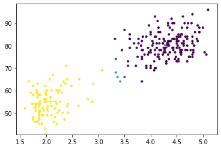
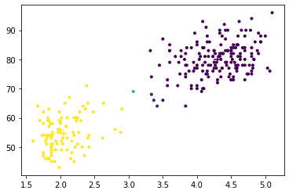
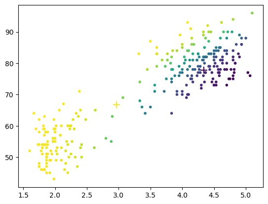
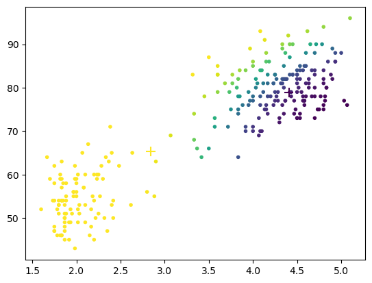
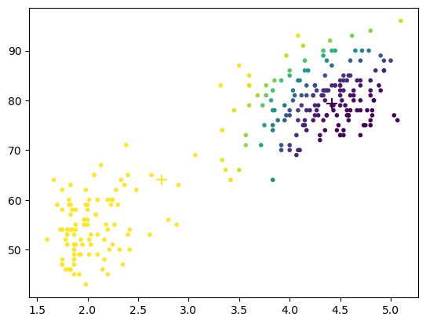
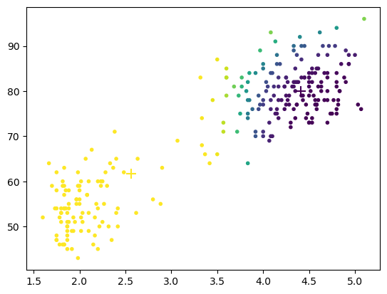
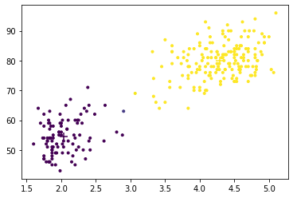
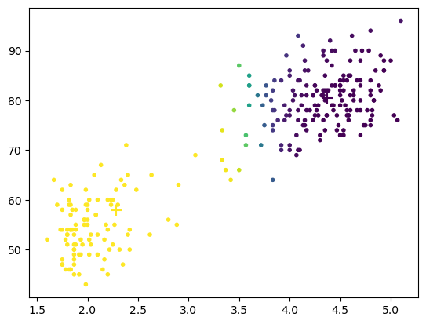
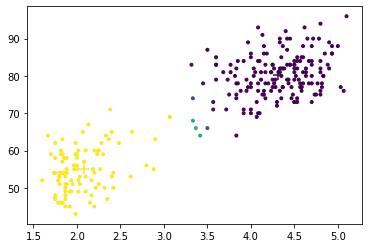
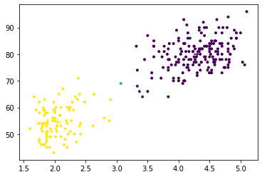
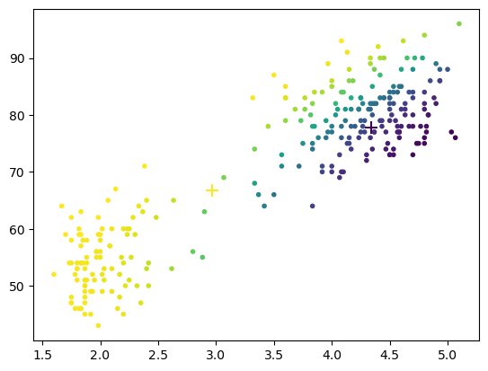
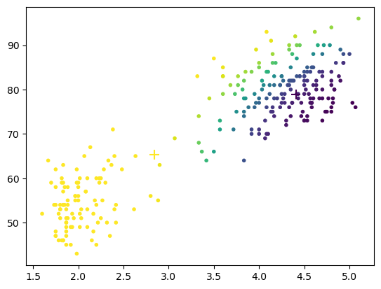
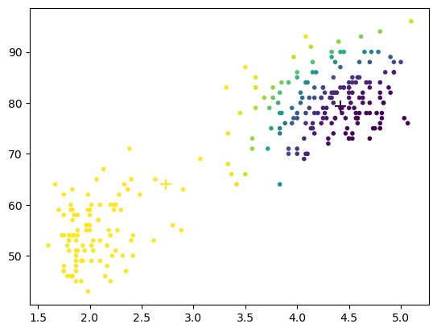
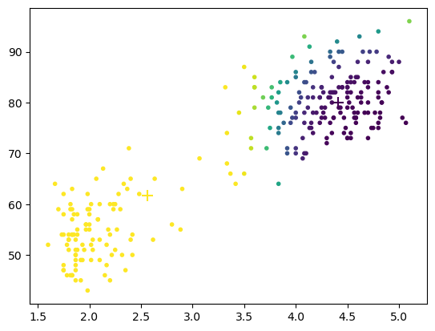
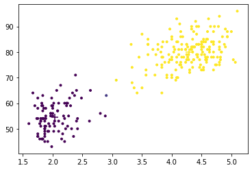
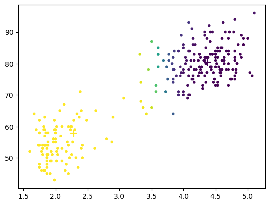
Dirichlet Process Mixture#
One problem in \(K\)-means and Mixture of Gaussians is that you have to assume the number of clusters \(K\) beforehand.
There is an extension called Dirichlet process mixture that decides the number of clusters based on the data.
See Kevin Murphy (2012) Ch. 25.2 for details.
scikit-learn#
scikit-learn is a popular Pyhon libraries of supervised and unsupervised learning algorithms with excellent documentation, examples and tutorials
from sklearn import mixture
mixture.BayesianGaussianMixture?
# Create a Dirichlet process mixture of Gaussians
dpm = mixture.BayesianGaussianMixture(n_components=5, max_iter=100)
# Fit to data
dpm.fit(X)
Mu = dpm.means_
Pi = dpm.weights_
#K = dpm.n_components
print("pi =", dpm.weights_)
# class label
Y = dpm.predict(X)
plt.scatter(X[:,0], X[:,1], c=Y)
#plt.scatter(Mu[:,0], Mu[:,1], c=range(K), marker='+',s=300);
pi = [4.04728561e-03 6.40742773e-01 3.98347436e-03 3.50629330e-01
5.97136939e-04]
<matplotlib.collections.PathCollection at 0x151cb1a00>
Principal Component Analysis#
Grasping the distribution of a high-dimensional data is not easy for human eyes. We often try to find a low-dimensional projection of the data that characteirizes the distribution.
Principal componet analysis (PCA) finds the directions of the data distribution with the largest variance.
Consider a projection of \(D\)-dimensional vector \(\b{x} = (x_1,...,x_D)^T\) to \(M\)-dimensional vector \(\b{y} = (y_1,...,y_M)^T\) by $\( \b{y} = V \b{x} \)\( where \)V = (\b{v}_1,…,\b{v}_M)^T\(, \)||\b{v}_m||=1$.
For a data set \(X=(x_1,...,x_N)^T\) with zero mean (mean subtracted), we try to find the projection by \(V\) that make the variance of \(\b{y}\) the largest.
Using the data covariance $\( C = \frac{1}{N}X^T X = \frac{1}{N}\sum_{n=1}^N \b{x}_n\b{x}_n^T \)\( the covariance of projection \)\b{z}\( is given as \)V^T C V$.
After solving the eigenvalue problem \(C\b{v}=\lambda \b{v}\), the covariance of projected data is maximized by \(V=(\b{v}_1,...,\b{v}_M)^T\) made of the eigenvectors with the largest eigenvalues \(\lambda_1,...,\lambda_M\).
# sklearn.datasets offers a wide range of public datasets
from sklearn import datasets
# the iris dataset
iris = datasets.load_iris()
X = iris.data # flower features
T = iris.target # flower types
N, D = X.shape
print(N, D)
150 4
# plot the data in 3D
from mpl_toolkits.mplot3d import Axes3D # for 3D plotting
fig = plt.figure()
ax = fig.add_subplot(111,projection='3d')
ax.scatter(X[:,0], X[:,1], X[:,2], c=T);
# Data covariance
X = X - np.mean(X, axis=0) # subtract the mean
C = X.T@X/N
# eigenvalue L[i] and normal eigenvector V[:,i]
L, Vt = np.linalg.eigh( C) # for symmetric matrix
#L, V = linalg.eig( C)
# in matrix form: C*V=V*L, i.e. C=V*L*V' from V'*V=I
print(L) # eigenvalues
print(Vt) # columns are eigenvectors
[0.02367619 0.0776881 0.24105294 4.20005343]
[[ 0.31548719 0.58202985 0.65658877 -0.36138659]
[-0.3197231 -0.59791083 0.73016143 0.08452251]
[-0.47983899 -0.07623608 -0.17337266 -0.85667061]
[ 0.75365743 -0.54583143 -0.07548102 -0.3582892 ]]
ind = np.argsort(-L) # largest first
L = L[ind] # reorder
V = Vt.T[ind]
print(V)
plt.plot(L)
plt.xlabel("index m")
plt.ylabel("$\lambda_m$");
[[-0.36138659 0.08452251 -0.85667061 -0.3582892 ]
[ 0.65658877 0.73016143 -0.17337266 -0.07548102]
[ 0.58202985 -0.59791083 -0.07623608 -0.54583143]
[ 0.31548719 -0.3197231 -0.47983899 0.75365743]]
# Projection of data to the PC space
Z = X@V.T
# First two PC
plt.scatter(Z[:,0], Z[:,1], c=T);
# Last two PC
plt.scatter(Z[:,2], Z[:,3], c=T);
Singular value decomposition (SVD)#
Singular value decomposition (SVD) represents a \(N\times D\) matrix (\(N>D\)) by a weighted sum of products of column vectors \(\b{u}_i \in \Re^N\) and row vectors \(\b{v}_i^T \in \Re^D\) $\( X = \sum_{i=1}^D s_i \b{u}_i \b{v}_i^T \)\( where \)\b{v}_i\( are the eigenvectors of \)X^T X\( and \)s_i= \sqrt{\lambda_i}\( are given by their corresponding eigenvalues (\)\lambda_1 \ge … \ge\lambda_D$).
In a matrix form, SVD is represented as $\( X = U S V^T \)\( where \)\( U = (\b{u}_1,...,\b{u}_D) \in \Re^{N\times D} \mbox{(or \)\Re^{N\times N}\( with empty columns)} \)\( \)\( S = \mbox{diag}(\sqrt{\lambda_1},...,\sqrt{\lambda_D}) \in \Re^{D\times D} \mbox{(or \)\Re^{N\times D}\( with empty rows)} \)\( \)\( V = (\b{v}_1,...,\b{v}_D) \in \Re^{D\times D}. \)$
Because \(V\) is the same as that for PCA, the SVD is often used for computing
# X = U*S*V' where S is a diagonal matrix
# i.e. C = X'*X/N = V*S^2/N*V'
U, S, Vs = np.linalg.svd(X)
# See if they match those derived from covariance matrix
print(S**2/N)
print(L)
print(Vs)
print(V)
[4.20005343 0.24105294 0.0776881 0.02367619]
[4.20005343 0.24105294 0.0776881 0.02367619]
[[ 0.36138659 -0.08452251 0.85667061 0.3582892 ]
[-0.65658877 -0.73016143 0.17337266 0.07548102]
[ 0.58202985 -0.59791083 -0.07623608 -0.54583143]
[ 0.31548719 -0.3197231 -0.47983899 0.75365743]]
[[-0.36138659 0.08452251 -0.85667061 -0.3582892 ]
[ 0.65658877 0.73016143 -0.17337266 -0.07548102]
[ 0.58202985 -0.59791083 -0.07623608 -0.54583143]
[ 0.31548719 -0.3197231 -0.47983899 0.75365743]]
Online PCA#
It has been shown that a simple linear neural network can perform computation similar to PCA (Sanger 1989).
Let us consider a two-layer network $\( \b{y} = W \b{x} \)\( with input \)\b{x}=(x_1,…,x_D)^T\(, output \)\b{y}=(y_1,…,y_M)^T\(, and \)M\times D\( connection weights \)W\( (\)M<D$).
Consider a generalized Hebbian algorithm In a componet form, it is $\( \Delta w_{ij} = \alpha(y_i x_j - y_i\sum_{k\le i} w_{kj}y_k) \)\( \)\( = \alpha[y_i(x_j - \sum_{k<i} w_{kj}y_k) - y_i^2 w_{ij}] \)$
In a matrix form, it is represented as $\( \Delta W = \alpha(\b{y}\b{x}^T - LT[\b{y}\b{y}^T]W) \)\( where \)LT[\ ]$ takes the lower triangle (including the diagonal) of a matrix.
It has been shown that the rows of matrix \(W\) converges to the \(M\) eigenvectors with the largest eigen values of the covariance matrix \(E[\b{x}\b{x}^T ]\)
Figure: The ordered feedback inhibition in generalized Hebbian algorithm (from Sanger 1989).
def gha(X, W, alpha=0.01):
"""Generalized Hebbian Alogrithm by Sanger (1989)"""
N, D = X.shape
for n in range(N):
y = W@X[n,:]
W += alpha*(np.outer(y, X[n,:]) - np.tril(np.outer(y,y))@W)
return W
# Iris example
M = 2
W = np.random.randn(M*D).reshape(M,D)
for k in range(10):
W = gha(X, W, alpha=0.01)
print(W)
[[ 0.39231157 -0.01325199 0.83312078 0.39184057]
[-0.24456166 -0.50821492 0.34779435 -0.64599399]]
[[ 0.39271898 -0.01236727 0.83328711 0.39109667]
[-0.30601437 -0.59132603 0.33092683 -0.57482115]]
[[ 0.39271995 -0.01236553 0.83328722 0.39109549]
[-0.36768686 -0.66069126 0.3098087 -0.48938244]]
[[ 0.39271996 -0.01236553 0.83328722 0.39109549]
[-0.42362362 -0.71088368 0.28640522 -0.39837684]]
[[ 0.39271996 -0.01236553 0.83328722 0.39109549]
[-0.47037736 -0.74188603 0.26335405 -0.31108356]]
[[ 0.39271996 -0.01236553 0.83328722 0.39109549]
[-0.50739628 -0.75757611 0.24275549 -0.23391795]]
[[ 0.39271996 -0.01236553 0.83328722 0.39109549]
[-0.53591828 -0.76294364 0.22563693 -0.16950242]]
[[ 0.39271996 -0.01236553 0.83328722 0.39109549]
[-0.55773305 -0.76223715 0.2121166 -0.11768263]]
[[ 0.39271996 -0.01236553 0.83328722 0.39109549]
[-0.5744897 -0.75841514 0.20180382 -0.0769202 ]]
[[ 0.39271996 -0.01236553 0.83328722 0.39109549]
[-0.58748069 -0.75330258 0.19412405 -0.04526691]]
W/np.linalg.norm(W, axis=1, keepdims=True)
array([[ 0.39238556, -0.012355 , 0.83257769, 0.39076248],
[-0.60200418, -0.77192545, 0.19892311, -0.04638598]])
# Projection of data to the PC space
Z = X@W.T
# First two PC
plt.scatter(Z[:,0], Z[:,1], c=T);
Infomax principle#
The infomax principle is to find a mapping from input \(\b{x}\) to the output \(\b{y}\) so that the mutual information $\( I(\b{y};\b{x}) = H(\b{y}) – H(\b{y}|\b{x}) \)$ is maximized.
PCA is an example of infomax by a linear transformation $\(\b{y}=V\b{x} \)\( while keeping the norm of the row vectors of matrix \)V$ to be one.
For a deterministic mapping or a mapping with homogenetous additive noise $\( \b{y}=f(\b{x})+\b{\epsilon}, \)\( \)H(\b{y}|\b{x})$ is constant, so that
maximization of information transfer \(I(\b{y};\b{x})\)
is equivalent to
maximization of output entropy \(H(\b{y})\).
Note that \(H(\b{y})\le\sum_i H(y_i)\) and the equality is achieved when the output components are independent: \(p(\b{y}) = \prod_i p(y_i).\)
Independent component analysis (ICA)#
We can listen to a particular speaker’s voice or a sound of an instrument among mixed sound. This is called cocktail party effect or blind separation.
For a \(D\) independent signal sources \(\b{s}=(s_1,...,s_D)^T\), we consider mixture signal $\( x_j = \sum_{i=1}^D a_{ji} s_i, \)\( or in vector form \)\( \b{x} = A \b{s}. \)$
Independent component analysis (ICA) tries to recover the original signals by $\( \b{y} = W\b{x} \)\( where components of \)\b{y}=(y_1,…,y_D)\( are independent, i.e., \)\( p(\b{y}) = \prod_{i=1}^D p(y_i), \)$
When the amplitude of \(y_i\) is bounded, the output entropy \(H(\b{y})\le\sum_i H(y_i)\) is maximized when \(y_i\) are independent.
ICA by Infomax#
If the signal distribution \(p(s_i)\) is supragaussian, having a sharp peak and long tails, ICA is achieved by a network with saturating output function, such as $\( \b{u} = W \b{x} \)\( \)\( y_i = \tanh(u_i). \)\( where \)\tanh(u)=\frac{e^u-e^{-u}}{e^u+e^{-u}}\( is a sigmoid function within \)(-1,1)$.
In this case, the derivative of the output entropy is given by (Bell & Sejnowski 1995) $\( \p{H(\b{y})}{W} = {W^T}^{-1} + \b{y}\b{x}^T. \)\( The entropy is maximized by the *natural gradient* method (Amari 1998), \)\( \Delta W = \alpha \p{H(\b{y})}{W} W^TW \)\( \)\( = \alpha({W^T}^{-1} - \b{y}\b{x}^T) W^TW \)\( \)\( = \alpha(W-\b{y}\b{u}^TW). \)$
def ica(X, W=None, alpha=0.01, online=True):
"""ICA by max entropy with tanh()"""
N, D = X.shape
if W is None:
W = np.eye(D) # initial guess
if online:
for n in range(N):
u = W@X[n,:]
y = np.tanh(u)
W += alpha*(W - np.outer(y,u@W))
else: # batch update
U = X@W.T
Y = np.tanh(U)
W += alpha*(W - Y.T@U@W/N)
return W
# Make mixed signals of two decaying tones
D = 2 # channels
N = 2000 # signal length
# Source signal
S = np.zeros((N, D))
for i in range(D):
T = 200 # tone length
M = 10 # number of tones
t = np.arange(T)
s = np.exp(-t/50)*np.sin(0.5*(2+i)*t) # single tone
ts = np.random.randint(0, N-T, M) # start timing
for m in range(M):
S[ts[m]:ts[m]+T,i] += s # add shifted tone
plt.subplot(2, 1, 1)
plt.plot(S)
plt.ylabel("S");
# Mixed signal
A = np.random.random((D,D)) # random matrix
print(A)
X = S@A.T
plt.subplot(2, 1, 2)
plt.plot(X)
plt.ylabel("X");
[[0.72354016 0.43629719]
[0.86180613 0.12532989]]
# Applyy ICA to the mixture
W = np.eye(D)
for k in range(10):
W = ica(X, W, alpha=0.001)
print(W@A)
U = X@W.T
Y = np.tanh(U)
[[2.69740644 2.31428407]
[3.61736314 0.02592029]]
[[ 1.21257859 9.09937504]
[ 6.8998253 -2.27545791]]
[[ 0.02959456 16.98500214]
[ 8.3690903 -0.56309701]]
[[ 1.59964713e-03 1.88882972e+01]
[ 8.57225698e+00 -2.21956964e-01]]
[[ 1.40023749e-03 1.91283107e+01]
[ 8.59484802e+00 -2.23113548e-01]]
[[ 1.40226291e-03 1.91555337e+01]
[ 8.59725680e+00 -2.23596775e-01]]
[[ 1.40267200e-03 1.91585831e+01]
[ 8.59751254e+00 -2.23653025e-01]]
[[ 1.40272186e-03 1.91589242e+01]
[ 8.59753966e+00 -2.23659315e-01]]
[[ 1.40272779e-03 1.91589623e+01]
[ 8.59754254e+00 -2.23660017e-01]]
[[ 1.40272849e-03 1.91589666e+01]
[ 8.59754284e+00 -2.23660096e-01]]
# plot the original and separated signals
plt.subplot(2, 1, 1)
plt.plot(S)
plt.ylabel("S")
plt.subplot(2, 1, 2)
plt.plot(U)
plt.ylabel("U");
# plot t2D signal distributions
plt.subplot(1, 4, 1)
plt.plot(S[:,0], S[:,1], '.')
plt.axis('square')
plt.title("S")
plt.subplot(1, 4, 2)
plt.plot(X[:,0], X[:,1], '.')
plt.axis('square')
plt.title("X")
plt.subplot(1, 4, 3)
plt.plot(U[:,0], U[:,1], '.')
plt.axis('square')
plt.title("U")
plt.subplot(1, 4, 4)
plt.plot(Y[:,0], Y[:,1], '.')
plt.axis('square')
plt.title("Y");
# see how the mixing and separation weights are aligned to mixed data
plt.plot(X[:,0], X[:,1], '.')
plt.axis('square')
plt.title("X")
# estimated mixing vectors
a = np.linalg.inv(W)
a = a/np.max(abs(a))
plt.plot([0, a[0,0]], [0, a[0,1]])
plt.plot([0, a[1,0]], [0, a[1,1]])
# separating vectors
w = W/np.max(W)
plt.plot([0,w[0,0]], [0,w[0,1]])
plt.plot([0,w[1,0]], [0,w[1,1]]);
Playing sound#
Do you want to hear the mixed and separated sounds?
You can use Python interface to portaudio library,
such as sounddevice or pyaudio and package to play sound.
First, install portaudio library. On Mac, if you have brew tool, you can run:
$ brew install portaudio
Currently sounddevice is not in the anaconda packages, so install by pip command:
$ pip install sounddevice
import sounddevice as sd
# Source sounds
for i in range(D):
sd.play(S[:,i], samplerate=4000, blocking=True) # 4kHz sampling, wait till finish
---------------------------------------------------------------------------
MemoryError Traceback (most recent call last)
Input In [29], in <cell line: 2>()
1 # Source sounds
2 for i in range(D):
----> 3 sd.play(S[:,i], samplerate=4000, blocking=True)
File ~/miniforge3/lib/python3.9/site-packages/sounddevice.py:175, in play(data, samplerate, mapping, blocking, loop, **kwargs)
172 ctx.write_outdata(outdata)
173 ctx.callback_exit()
--> 175 ctx.start_stream(OutputStream, samplerate, ctx.output_channels,
176 ctx.output_dtype, callback, blocking,
177 prime_output_buffers_using_stream_callback=False,
178 **kwargs)
File ~/miniforge3/lib/python3.9/site-packages/sounddevice.py:2582, in _CallbackContext.start_stream(self, StreamClass, samplerate, channels, dtype, callback, blocking, **kwargs)
2579 def start_stream(self, StreamClass, samplerate, channels, dtype, callback,
2580 blocking, **kwargs):
2581 stop() # Stop previous playback/recording
-> 2582 self.stream = StreamClass(samplerate=samplerate,
2583 channels=channels,
2584 dtype=dtype,
2585 callback=callback,
2586 finished_callback=self.finished_callback,
2587 **kwargs)
2588 self.stream.start()
2589 global _last_callback
File ~/miniforge3/lib/python3.9/site-packages/sounddevice.py:1494, in OutputStream.__init__(self, samplerate, blocksize, device, channels, dtype, latency, extra_settings, callback, finished_callback, clip_off, dither_off, never_drop_input, prime_output_buffers_using_stream_callback)
1464 def __init__(self, samplerate=None, blocksize=None,
1465 device=None, channels=None, dtype=None, latency=None,
1466 extra_settings=None, callback=None, finished_callback=None,
1467 clip_off=None, dither_off=None, never_drop_input=None,
1468 prime_output_buffers_using_stream_callback=None):
1469 """PortAudio output stream (using NumPy).
1470
1471 This has the same methods and attributes as `Stream`, except
(...)
1492
1493 """
-> 1494 _StreamBase.__init__(self, kind='output', wrap_callback='array',
1495 **_remove_self(locals()))
File ~/miniforge3/lib/python3.9/site-packages/sounddevice.py:858, in _StreamBase.__init__(self, kind, samplerate, blocksize, device, channels, dtype, latency, extra_settings, callback, finished_callback, clip_off, dither_off, never_drop_input, prime_output_buffers_using_stream_callback, userdata, wrap_callback)
853 return _wrap_callback(callback, data, frames, time, status)
855 elif kind == 'output' and wrap_callback == 'array':
857 @ffi_callback
--> 858 def callback_ptr(iptr, optr, frames, time, status, _):
859 data = _array(
860 _buffer(optr, frames, self._channels, self._samplesize),
861 self._channels, self._dtype)
862 return _wrap_callback(callback, data, frames, time, status)
MemoryError: Cannot allocate write+execute memory for ffi.callback(). You might be running on a system that prevents this. For more information, see https://cffi.readthedocs.io/en/latest/using.html#callbacks
# Mixed sounds
for i in range(D):
sd.play(X[:,i], samplerate=4000, blocking=True) # 4kHz sampling, wait till finish
# Separated sounds
for i in range(D):
u = U/abs(np.max(U)) # scale in [-1,1]
sd.play(u[:,i], samplerate=4000, blocking=True) # 4kHz sampling, wait till finish
Receptive fields of visual cortex neurons#
Cat visual cortex (Hubel & Wiesel)
Self-organization (von der Malsburgh)
by Informax (Linsker)
by SOM (Obermayer et al.)
by PCA (Sanger et al.)
by ICA (Bell & Sejnowski)
Replicating receptive field tuning#
Sanger (1989) trained an autoencoder network with patches from natural images as inputs. The PCs learned by generalized Hebbian learning in the hiddenlayers had input weights similar to the receptive field propertis of visual cortical neurons.
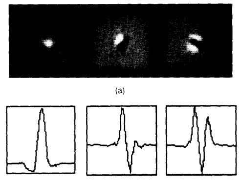 Figure from Sanger (1989)
References#
Bishop CM (2006) Pattern Recognition and Machine Learning. Springer.
Chapter 9: Mixture models and EM
Chapter 12: Continuous latent variables
Murphy K (2012) Machine learning: A probabilistic perspective. MIT press.
Chapter 25.2: Dirichlet process mixture models
Self Organization#
Hubel DH, Wiesel TN (1959). Receptive fields of single neurones in the cat’s striate cortex. Journal of Physiology, 148, 574-91. http://doi.org/10.1113/jphysiol.1959.sp006308
Hubel DH, Wiesel TN (1962). Receptive fields, binocular interaction and functional architecture in the cat’s visual cortex. Journal of Physiology, 160, 106-154. http://doi.org/10.1113/jphysiol.1962.sp006837
von der Malsburg C (1973). Self-organization of orientation sensitive cells in the striate cortex. Kybernetik, 14, 85-100.
Kohonen T (1982). Self-Organized Formation of Topologically Correct Feature Maps. Biol Cybern, 43, 59-69.
PCA#
Sanger TD (1989). Optimal unsupervised learning in a single-layer linear feedforward neural network. Neural Networks, 2, 459-473. http://doi.org/10.1016/0893-6080(89)90044-0
Turk M, Pentland A (1991). Eigenfaces for recognition. Journal of Cognitive Neurosciece, 3, 71-86. http://doi.org/10.1162/jocn.1991.3.1.71
Infomax and ICA#
Linsker R (1986). From basic network principles to neural architecture. Proceedings of the National Academy of Sciences, USA, 83, 7508-7512, 8390-8394, 8779-8783. http://doi.org/10.1073/pnas.83.19.7508
Bell AJ, Sejnowski TJ (1995). An information-maxization approach to blind separation and blind deconvolution. Neural Comput, 7, 1129-1159. http://doi.org/10.1162/neco.1995.7.6.1129
Bell AJ, Sejnowski TJ (1997). The “independent components” of natural scenes are edge filters. Vision Research, 37, 3327-3338. http://doi.org/10.1016/s0042-6989(97)00121-1
Amari S (1998). Natural gradient works efficiently in learning. Neural Comput, 10, 251-276. http://doi.org/10.1162/089976698300017746
Exercise#
Apply \(K\)-means and Mixtures of Gaussians to a dataset which may have some cluster structure.
Apply PCA and SVD to a high-dimensional dataset of your interest and compare the results.
Apply ICA to a mixted signal of your interest and whether it can separate the original signals.